PART 07Member E2E guide (where to click & how every feature works)
Follow this end-to-end walkthrough from first sign-in to daily mailbox management. Every protected page enforces require_auth() and redirects unauthenticated visitors to public/login.php.
7.1 Sign-in and forced password change
- Open
http://172.20.10.2/public/login.php(active server, Figures 39–40) orhttp://172.20.10.2/public/login.php(earlier lab IP, Figures 19–20). - Enter your
@couriva.comemail (or bare username) and password. Click the Eye / EyeOff icon inside any password field to toggle visibility. - If an admin flagged your account with a temporary password (
must_change_password=1), Couriva locks you ontopublic/change-password.php(all JSON APIs return HTTP403) until you set a new 10+ character password containing uppercase, lowercase, number, and symbol.
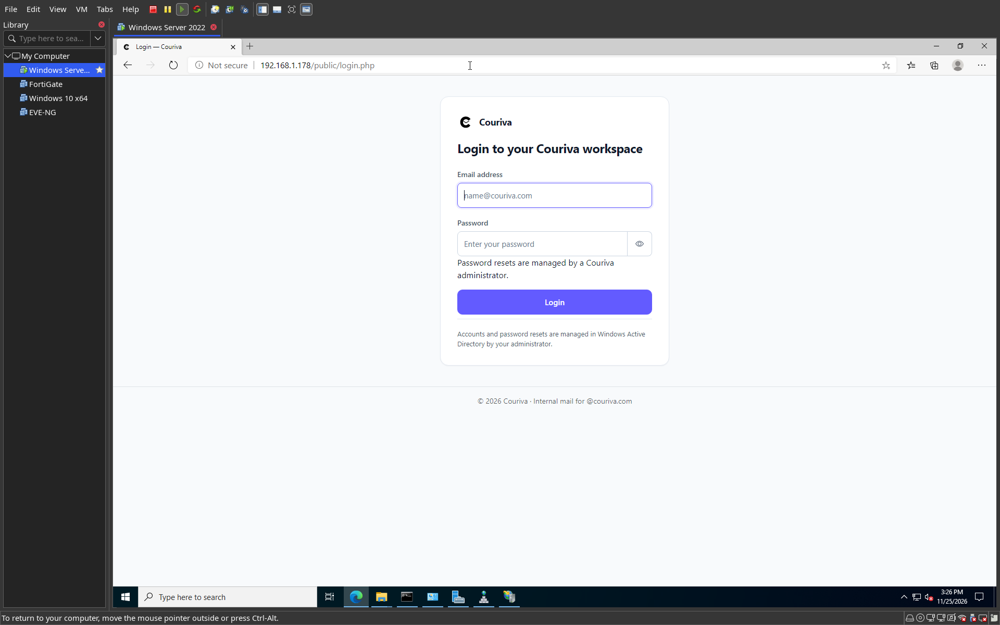
172.20.10.2/public/login.php — desktop. Live VM.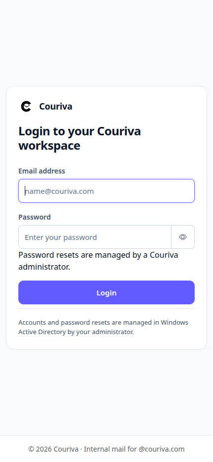
172.20.10.2/public/login.php — 430×932 mobile viewport. Fresh headless capture against the live VM web app.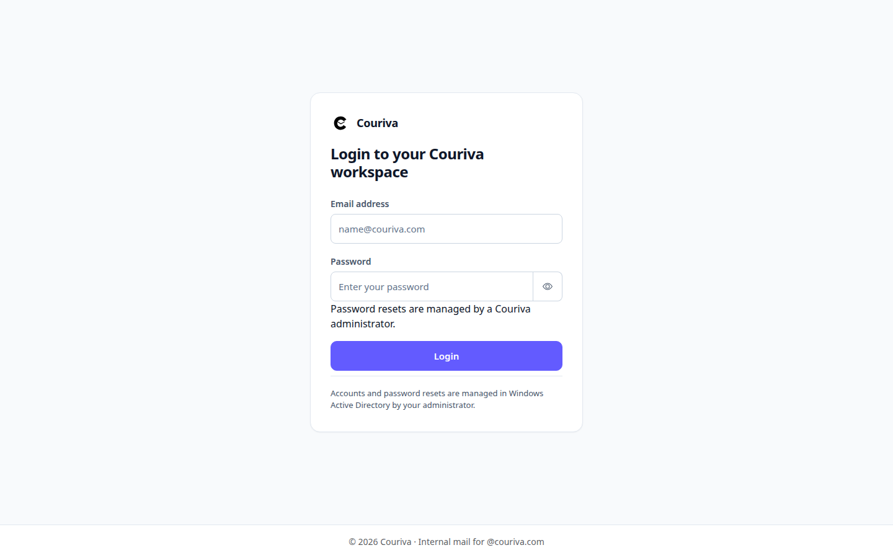
172.20.10.2/public/login.php — captured before the disposable account login.must_change_password=1.7.2 Inbox, reading pane, search, and attachments
- After login you land on
public/inbox.php. Use the left sidebar to switch between Inbox, Starred, Snoozed, Sent, Drafts, Scheduled, Archive, Spam, Trash, Custom Folders, and Color Labels. - Use the top search bar to filter by keyword or date range (
25messages per page). - Click any message row to open the split reading pane (
api/get_email.php) or full thread view (public/read.php), where you can Reply, Reply All, Forward, or click an attachment chip to download safely viapublic/download.php.

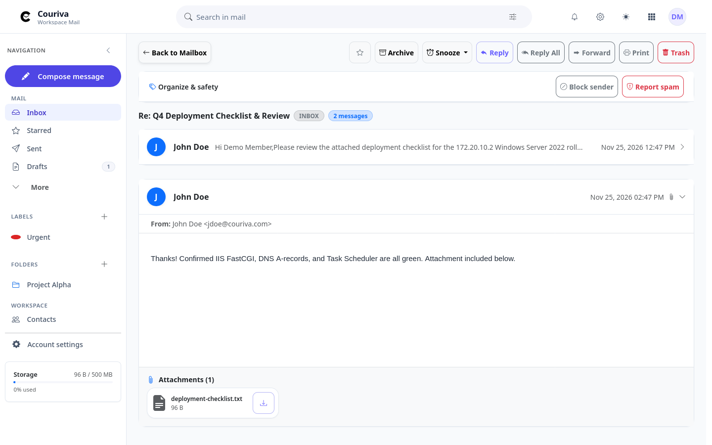
public/read.php — 2-message thread view, Reply/Forward/Archive/Snooze/Trash actions, and attachment chip. Live 172.20.10.2.7.3 Composing, attaching files, and auto-saving drafts
- Click Compose (
public/compose.php). Type in To / Cc / Bcc to trigger live contact autocomplete (api/contacts.php). - Drag or pick files in the attachment zone (max
25 MBper file,50 MBtotal,500 MBaccount quota). Selected files appear as chips (Figure 34). - While typing,
api/autosave_draft.phpsilently saves your draft every 30 seconds. - Click Send for immediate delivery, Save as Draft to finish later in
public/drafts.php, or Schedule to pick a future date/time (1 minuteto1 yearahead) queued inpublic/scheduled.php.

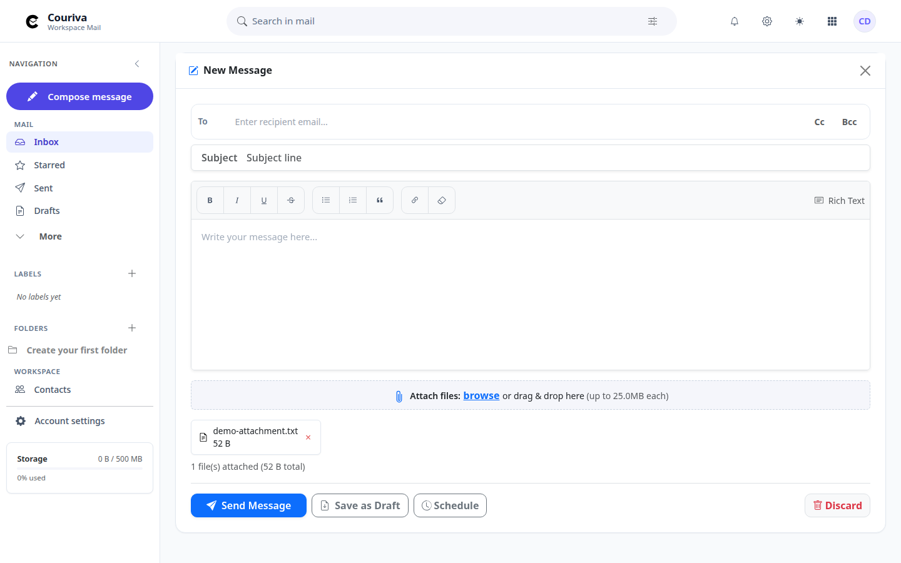
demo-attachment.txt shown as an attached file chip.
7.4 Organizing mail (folders, labels, archive, snooze, and batch actions)
- Star: Click the star icon on any row (
api/toggle_star.php) to pin it under Starred. - Archive: Moves a message out of Inbox without deleting it; find it anytime under Archive.
- Snooze: Temporarily hides an Inbox message until your chosen
snoozed_untiltimestamp, then automatically resurfaces it in Inbox. - Custom Folders & Color Labels: Create or rename folders/labels in the sidebar (
api/organization.php). Moving to a custom folder removes the message from the default Inbox view; labels act as multi-color tags. - Batch Actions: Check multiple rows to mark read/unread, star, archive, snooze, apply labels, move to a folder, or delete in one click (
api/batch_actions.php).
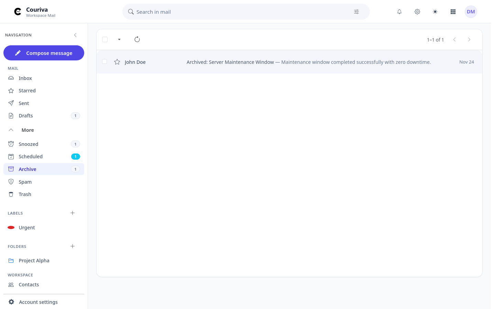
public/inbox.php?folder=archive — archived messages with Unarchive action. Live 172.20.10.2.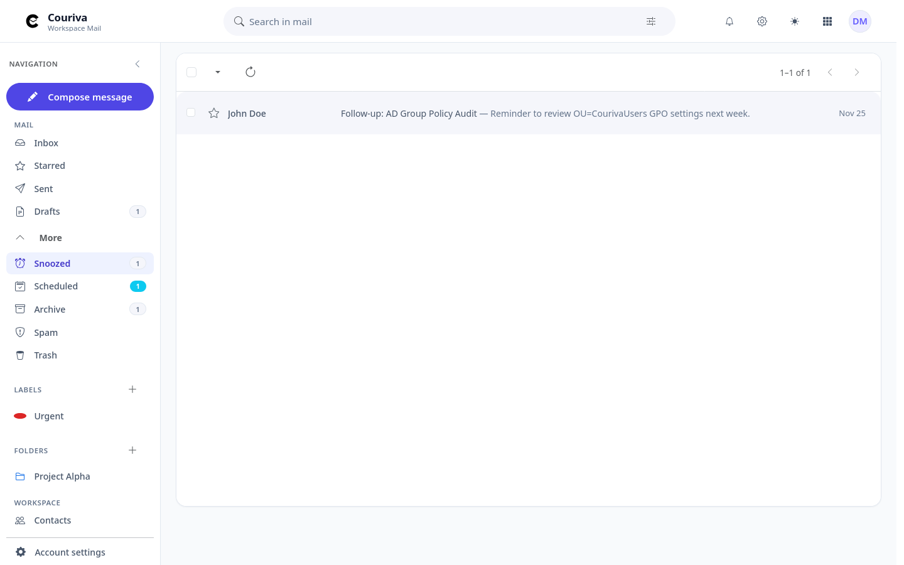
public/inbox.php?folder=snoozed — snoozed messages awaiting wake-up time. Live 172.20.10.2.7.5 Sent, Scheduled, Spam, and Trash lifecycle
- Sent (
public/sent.php): Outgoing mail log. - Scheduled (
public/scheduled.php): Edit scheduled time/content or cancel a queued send back into Drafts before the 1-minute worker picks it up. - Spam (
public/spam.php): Holds mail from blocked senders or messages reported as spam. You can restore false positives back to Inbox. - Trash (
public/trash.php): Soft-deleted items can be Restored. Clicking Delete Permanently removes the database row, purges any orphan attachment files fromstorage\attachments\, and frees your storage quota.
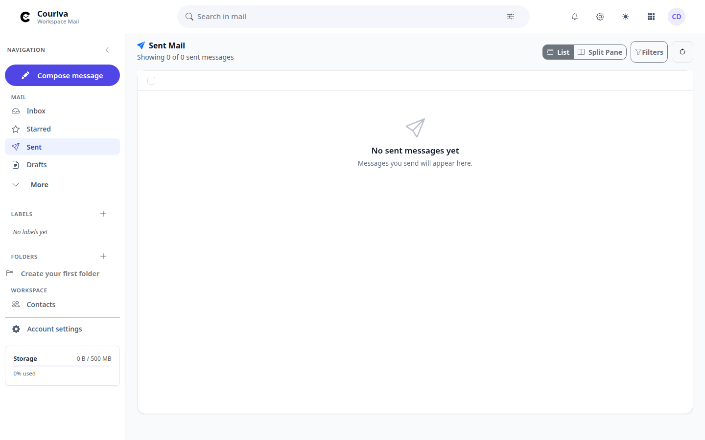

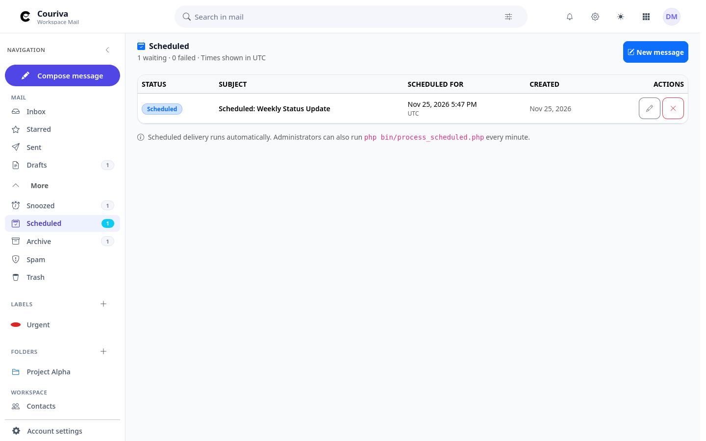
public/scheduled.php — queued scheduled email with Edit and Cancel controls. Live 172.20.10.2.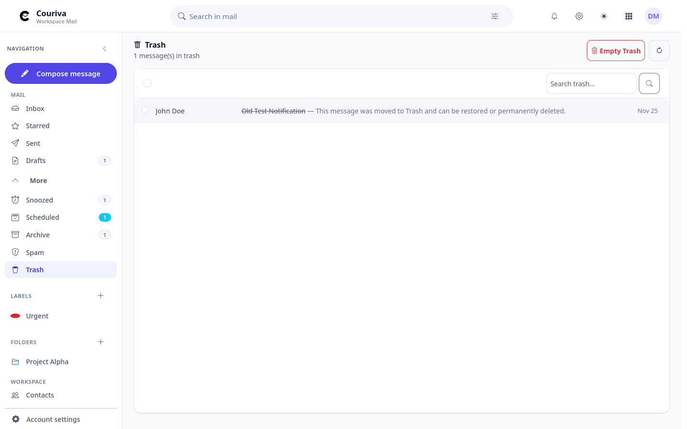
public/trash.php — trashed messages with Restore and Delete Permanently actions. Live 172.20.10.2.7.6 Contacts, notifications, and settings
- Contacts (
public/contacts.php): Add, edit, or delete personal contacts. Optional Philippine mobile numbers enforce the 11-digit09XXXXXXXXXformat in both browser input masking and server validation (is_valid_ph_phone()). - Notifications (
public/notifications.php): Shows unread/total incoming mail alerts and lets you mark alerts read. - Settings (
public/settings.php): Switch Light / Dark / System theme (saved instantly viaapi/theme.php), configure your default email signature, and set your time zone.

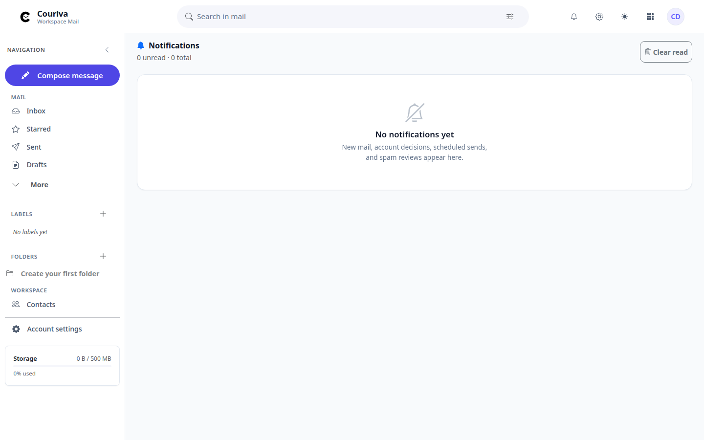

Capture status: All member screens (Figures 19–30, 34) were captured live against the VM using a disposable account; no credentials were written to any file.
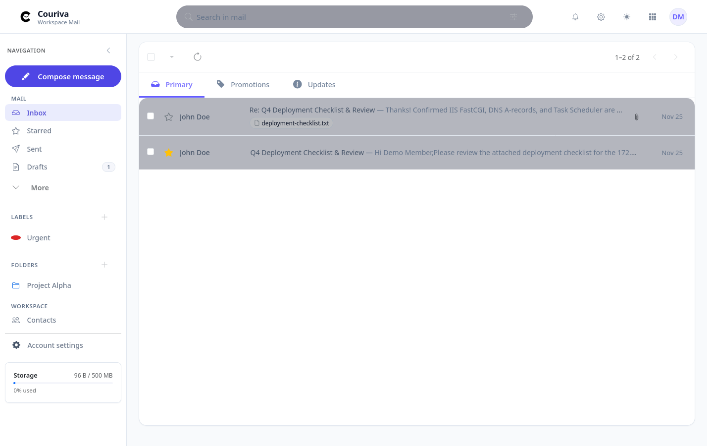
public/inbox.php — Dark theme enabled in user preferences. Live 172.20.10.2.PART 08Administrator / operator
admin/index.php shows account counts, message volume, attachment bytes and a live activity feed. admin/users.php governs status/role/session epoch; web creation is disabled (HTTP 403). admin/edit-user.php issues temporary passwords, sets must_change_password=1, bumps session_epoch. admin/logs.php filters system_logs by action, status, IP, user and keyword. admin/spam-reports.php resolves/dismisses reports; admin/registrations.php is retired (HTTP 410).
Break-glass provisioning (only supported local admin path):
$env:ADMIN_EMAIL='admin@couriva.local'
$env:ADMIN_PASSWORD='<type-live-secret>'
$env:ADMIN_FIRST_NAME='System'; $env:ADMIN_LAST_NAME='Administrator'
& C:\PHP\php.exe C:\inetpub\wwwroot\Web_Mail_System\bin\create-admin.php
Privacy-preserving governance: Administrators never browse private user mailboxes. When a member reports spam, admin/spam-reports.php exposes only that single reported message: Resolve adds the sender to blocked_senders and keeps the copy in Spam; Dismiss returns the message to Inbox.
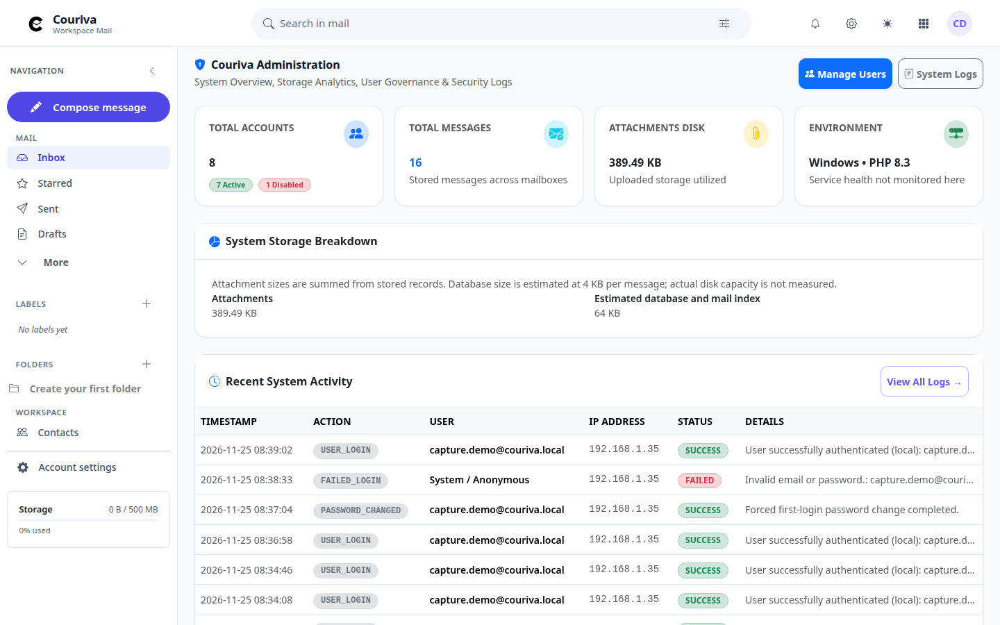


system_logs audit trail.admin/logs.php; curl -s -o /dev/null -w "%{http_code}\n" http://172.20.10.2/admin/create-user.php → 403.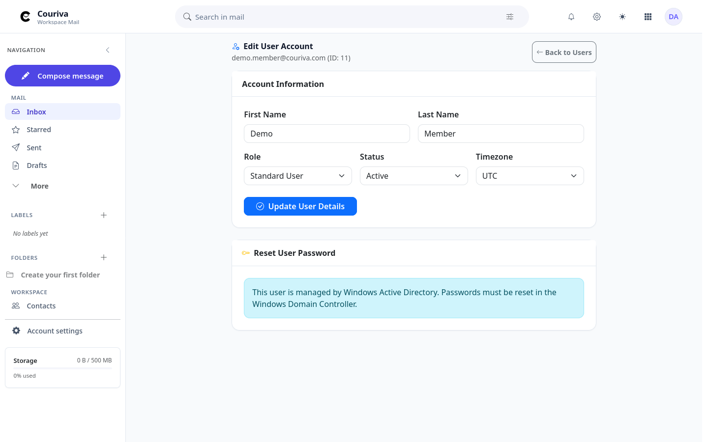
admin/edit-user.php — role/status/timezone governance and AD password reset notice. Live 172.20.10.2.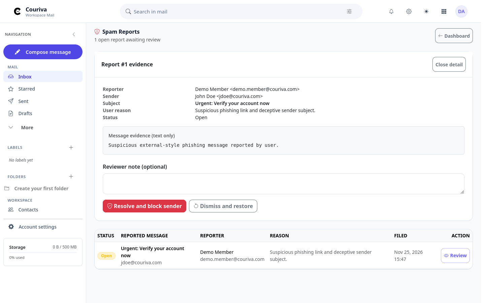
admin/spam-reports.php — privacy-isolated single-message evidence with Resolve & Block vs. Dismiss & Restore. Live 172.20.10.2.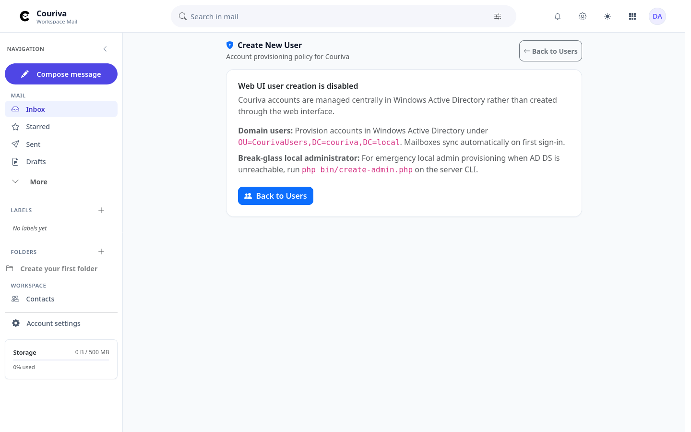
admin/create-user.php — retired local user creation returning HTTP 403 (AD-only provisioning). Live 172.20.10.2.